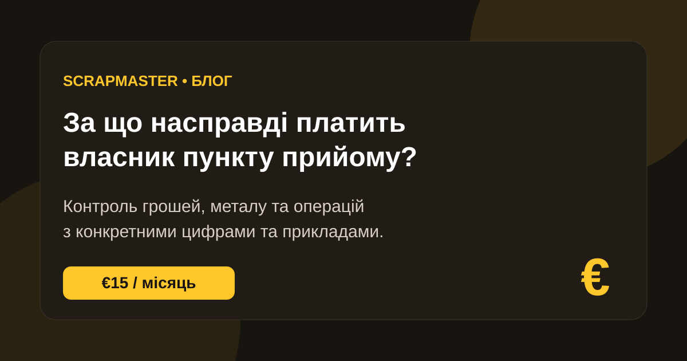

Чи варто платити за програму для прийому металобрухту щомісяця? Розбираємо на конкретних цифрах — без абстрактного «це зручно».

«Навіщо мені платити €15 щомісяця за програму? Я можу вести облік в Excel, блокноті або просто запитати працівника».
Це нормальне питання. І якщо програма просто замінює блокнот на комп'ютер — платити за неї справді складно виправдати.
Тому поговорімо не про красивий інтерфейс і не про кількість кнопок. Поговорімо про те, що система дає власнику пункту прийому металобрухту в грошах, часі та контролі.
Візьмемо простий приклад. Для розрахунків у цій статті використаємо орієнтовну ціну міді на прийомці 500 грн/кг. Фактична ціна залежить від виду міді, якості, засміченості та конкретного пункту.
Тепер стає зрозуміло, чому для пункту прийому металобрухту навіть невелика помилка в обліку може бути дорожчою за місячну вартість системи.
Уявімо пункт, який за місяць приймає 1 000 кг міді за середньою ціною 500 грн/кг.
Тільки закупівельний оборот за цією позицією — 500 000 грн.
Якщо через помилки, невраховані операції або розбіжності губиться лише 0,3% такого обороту, це:
500 000 × 0,3% = 1 500 грн на місяць.
Це не твердження, що кожен пункт втрачає саме 0,3%. Це просто модель, яка показує масштаб: коли через бізнес проходять сотні тисяч гривень, навіть дуже невелика частка помилок має грошовий еквівалент.
Наприклад, оператор прийняв 5 кг міді, але в обліку помилково провів 4 кг.
Різниця — 1 кг × 500 грн = 500 грн.
Якщо таких дрібних розбіжностей за місяць накопичилося на 5 кг, це вже 2 500 грн.
У системі кожна операція має конкретну вагу, матеріал, ціну, суму, дату, час і працівника. Це не гарантує відсутність помилок, але дозволяє побачити, що саме відбулося, а не відновлювати події по пам'яті.
Типова розмова власника з пунктом може виглядати так:
— Скільки сьогодні прийняли?
— Приблизно триста кілограмів.
— А скільки виплатили?
— Зараз подивлюся.
— А скільки залишилося міді?
— Треба порахувати.
Проблема тут не в працівнику. Проблема в тому, що інформація знаходиться в голові працівника або в різних файлах.
У системі власник отримує іншу модель: операції фіксуються під час роботи, а історія доступна в будь-який момент.
Наприклад, 24 вересня оператор прийняв:
Через місяць виникає питання: «Чому за цю операцію виплатили 6 000 грн?»
Власнику не потрібно покладатися на пам'ять. Він відкриває історію операцій і бачить, що саме було проведено, коли та ким.
Цю витрату часто взагалі не рахують.
Припустимо, власник витрачає лише 30 хвилин на день на ручний контроль:
За 26 робочих днів це приблизно 13 годин на місяць.
Якщо власник оцінює свою робочу годину хоча б у 300 грн, це:
13 × 300 = 3 900 грн на місяць.
ScrapMaster не обіцяє, що ці 13 годин автоматично зникнуть. Але чим більше операцій і пунктів, тим більше ручної роботи можна замінити системним обліком.
«У мене хороший приймальник, я йому довіряю» — абсолютно нормальна позиція.
Але хороший працівник теж може:
Система не замінює довіру. Вона зменшує залежність бізнесу від пам'яті однієї людини.
Уявімо: за проведеними операціями працівники повинні були видати клієнтам 48 500 грн.
Фактично в касі — 46 800 грн.
Різниця — 1 700 грн.
Без системного журналу власнику доводиться відновлювати події вручну.
У ScrapMaster рух операцій можна перевірити послідовно: які операції створили рух коштів, хто їх провів і коли. Система не може фізично гарантувати, що розбіжностей не буде, але вона робить їх видимими та перевірюваними.
Один пункт ще можна контролювати вручну.
Два-три — складніше.
Коли пунктів стає 5, 10 або більше, власнику потрібна не просто форма для внесення операції. Потрібна єдина картина всієї мережі.
| Пункт | Прийнято міді | Виплачено | Залишок |
|---|---|---|---|
| №1 | 420 кг | 210 000 грн | 180 кг |
| №2 | 310 кг | 155 000 грн | 140 кг |
| №3 | 270 кг | 135 000 грн | 95 кг |
Тепер власник бачить не три окремі Excel-файли. Він бачить один бізнес із трьома пунктами.
Для одного пункту ScrapMaster коштує €15 на місяць.
Це приблизно €0,50 на день.
За ці гроші власник отримує систему для щоденної роботи пункту:
Тому питання можна поставити інакше:
Чи коштує контроль вашого пункту €0,50 на день?
Чесна відповідь: не кожному пункту потрібна спеціалізована система.
Якщо ви самі приймаєте метал, самі ведете облік, самі контролюєте касу, у вас небагато операцій і Excel повністю вас влаштовує — можливо, цього достатньо.
ScrapMaster має сенс тоді, коли вартість відсутності системного контролю стає вищою за вартість самої системи.
Візьмемо умовний сценарій:
Це приклад для розуміння економіки, а не гарантія конкретної економії. Фактичний ефект залежить від обсягу роботи та процесів конкретного пункту.
Через місяць система дає контроль поточних операцій.
Через пів року вона вже містить історію бізнесу.
Можна дивитися:
І тоді власник може ставити бізнесу запитання, на які складно відповісти за допомогою блокнота:
Який пункт працює активніше? Які обсяги змінюються? Де виникають розбіжності? Що відбувалося з бізнесом протягом року?
Не за красивий інтерфейс.
Не за Excel у браузері.
І не просто за можливість записати, що сьогодні хтось прийняв 12 кг міді.
Ви платите за те, щоб:
Пункт прийому металобрухту — це постійний рух:
метал → гроші → операція → склад → продаж → гроші.
Якщо цей рух неможливо швидко побачити й перевірити, власник фактично керує бізнесом через інформацію, яку йому хтось передає.
ScrapMaster переводить цю інформацію в систему.
€15 на місяць — це ціна одного пункту. Але цінність системи — у контролі, який вона дає власнику щодня.
Запросіть демонстрацію та покажіть нам, як сьогодні ведеться облік. Ми покажемо, що саме можна перевести в систему.
Запросити демо